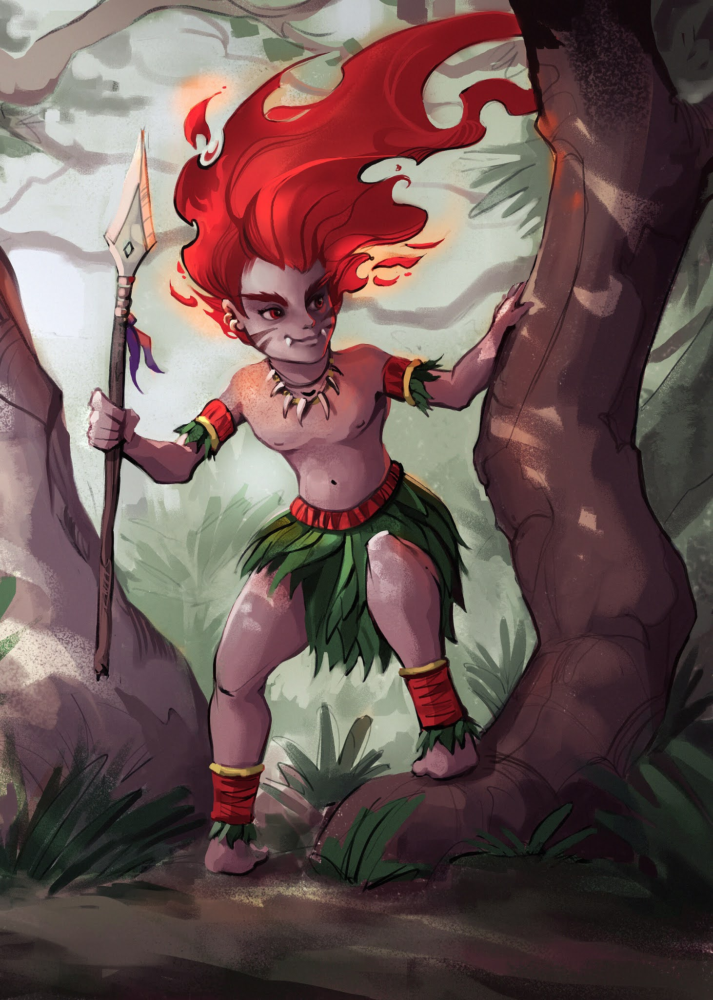
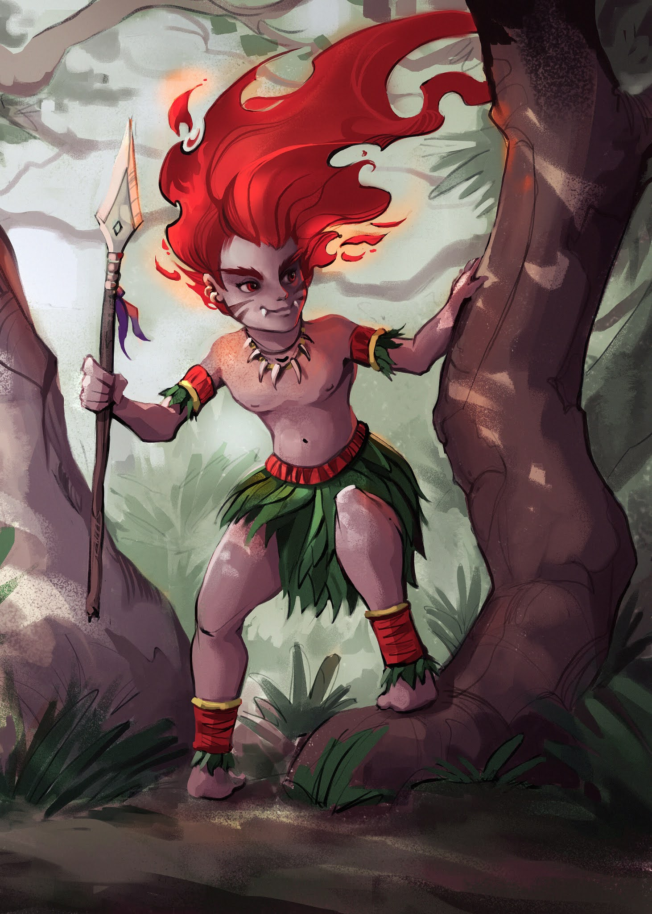

Curupira
O Curupira é o guardião das florestas. Ele tem cabelos verdes e pés virados para trás. Sua função é proteger a natureza e punir caçadores. Usa truques para enganar quem invade seu território.
O folclore é um conjunto de tradições, lendas, mitos e costumes que são transmitidos de geração em geração dentro de uma cultura. Ele reflete a identidade e a história de um povo, incorporando elementos como música, dança, arte, culinária e festividades.
O Contos da Nossa Terra foi feito para contar histórias de lendas que são passadas de geração para geração.
O Curupira é o guardião das florestas. Ele tem cabelos verdes e pés virados para trás. Sua função é proteger a natureza e punir caçadores. Usa truques para enganar quem invade seu território.
A Iara é uma sereia dos rios. Com seus longos cabelos verdes, encanta pescadores e os atrai com seu canto. Protetora das águas, é símbolo de beleza e mistério no folclore.
O Saci é travesso e veloz, com um gorro vermelho mágico e uma perna só. Adora fazer pegadinhas e proteger as florestas, confundindo quem tenta explorá-las.
O Boto cor-de-rosa se transforma em um belo rapaz em festas ribeirinhas. Ele seduz mulheres e depois desaparece nas águas. É uma figura romântica e misteriosa da Amazônia.
Além dos personagens mais conhecidos, o folclore brasileiro também conta com lendas como a da Mula Sem Cabeça, o Boitatá e o Lobisomem. Essas histórias variam de região para região, mas todas carregam ensinamentos e mistérios populares.
Este site foi criado por entusiastas da cultura brasileira com o objetivo de preservar e divulgar as tradições folclóricas. Acreditamos na importância de manter viva a memória cultural do nosso povo.